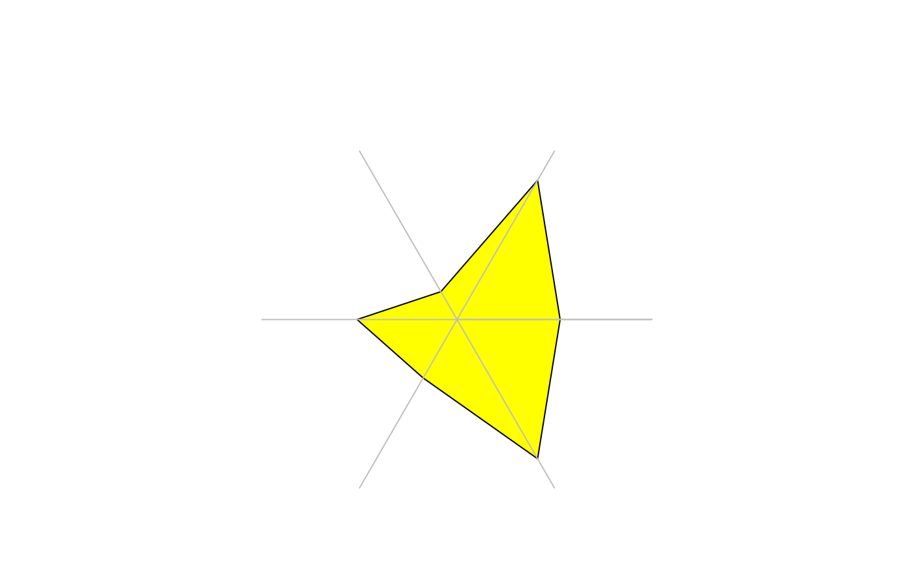
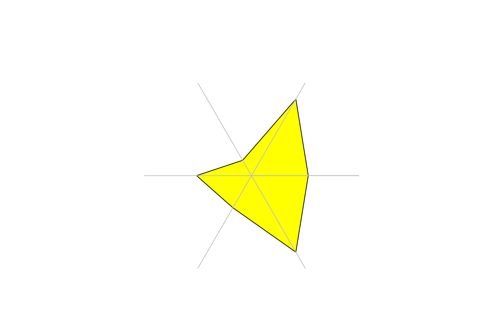
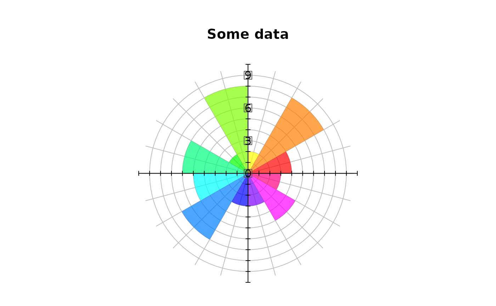
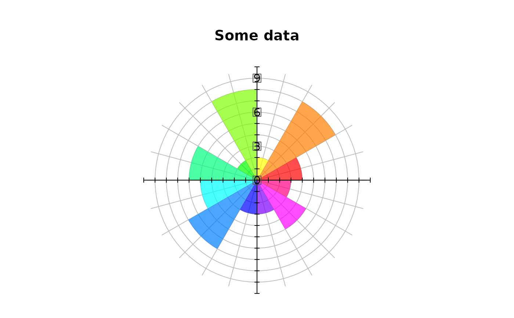

Plot Values on a Circular Grid
PlotPolar.RdPlotPolar creates a polar coordinate plot of the radius r in function of the angle theta.
0 degrees is drawn at the 3 o'clock position and angular values increase in a counterclockwise direction.
Arguments
- r
a vector of radial data.
- theta
a vector of angular data specified in radians.
- type
one out of
c("p","l","h"), the plot type, defined following the definition in plot type."p"means points,"l"will connect the points with lines and"h"is used to plot radial lines from the center to the points.
Default is"p".- rlim
the r limits (r1, r2) of the plot
- main
a main title for the plot, see also
title.- lwd
a vector of line widths, see
par.- lty
a vector of line types, see
par.- col
The colors for lines and points. Multiple colors can be specified so that each point can be given its own color. If there are fewer colors than points they are recycled in the standard fashion. Lines will all be plotted in the first colour specified.
- pch
a vector of plotting characters or symbols: see
points.- fill
fill color, defaults to
NA(none).- cex
a numerical vector giving the amount by which plotting characters and symbols should be scaled relative to the default. This works as a multiple of
par("cex").NULLandNAare equivalent to 1.0.- mar
A numerical vector of the form c(bottom, left, top, right) which gives the number of lines of margin to be specified on the four sides of the plot.
- add
defines whether points should be added to an existing plot.
- ...
further arguments are passed to the plot command.
Details
The function is rather flexible and can produce quite a lot of of different plots. So is it also possible to create spider webs or radar plots.
See also
Examples
testlen <- c(sin(seq(0, 1.98*pi, length=100))+2+rnorm(100)/10)
testpos <- seq(0, 1.98*pi, length=100)
PlotPolar(testlen, testpos, type="l", main="Test Polygon", col="blue")
PolarGrid(ntheta=9, col="grey", lty="solid", lblradians=TRUE)
 # start at 12 o'clock and plot clockwise
PlotPolar(testlen, -(testpos - pi/2), type="p", main="Test Polygon",
col="green", pch=16)
PolarGrid(ntheta = rev(seq(0, 2*pi, by=2*pi/9) + pi/2),
alabels=Format(seq(0, 2*pi, by=2*pi/9), digits=2)[-10], col="grey",
lty="solid", lblradians=TRUE)
# start at 12 o'clock and plot clockwise
PlotPolar(testlen, -(testpos - pi/2), type="p", main="Test Polygon",
col="green", pch=16)
PolarGrid(ntheta = rev(seq(0, 2*pi, by=2*pi/9) + pi/2),
alabels=Format(seq(0, 2*pi, by=2*pi/9), digits=2)[-10], col="grey",
lty="solid", lblradians=TRUE)
 # just because of it's beauty
t <- seq(0,2*pi,0.01)
PlotPolar( r=sin(2*t)*cos(2*t), theta=t, type="l", lty="dashed", col="red" )
PolarGrid()
# just because of it's beauty
t <- seq(0,2*pi,0.01)
PlotPolar( r=sin(2*t)*cos(2*t), theta=t, type="l", lty="dashed", col="red" )
PolarGrid()
 # use some filled polygons
ions <- c(3.2,5,1,3.1,2.1,5)
ion.names <- c("Na","Ca","Mg","Cl","HCO3","SO4")
PlotPolar(r = ions, type="l", fill="yellow")
# use some filled polygons
ions <- c(3.2,5,1,3.1,2.1,5)
ion.names <- c("Na","Ca","Mg","Cl","HCO3","SO4")
PlotPolar(r = ions, type="l", fill="yellow")
 # the same, but let's have a grid first
PlotPolar(r = ions, type="l", lwd=2, col="blue", main="Ions",
panel.first=PolarGrid(nr=seq(0, 6, 1)) )
# the same, but let's have a grid first
PlotPolar(r = ions, type="l", lwd=2, col="blue", main="Ions",
panel.first=PolarGrid(nr=seq(0, 6, 1)) )
 # leave the radial grid out
PlotPolar(r = ions, type="l", fill="yellow")
PolarGrid(nr = NA, ntheta = length(ions), alabels = ion.names,
col = "grey", lty = "solid" )

# display radial lines
PlotPolar(r = ions, type="h", col="blue", lwd=3)
# add some points
PlotPolar(r = ions, type="p", pch=16, add=TRUE, col="red", cex=1.5)
# leave the radial grid out
PlotPolar(r = ions, type="l", fill="yellow")
PolarGrid(nr = NA, ntheta = length(ions), alabels = ion.names,
col = "grey", lty = "solid" )

# display radial lines
PlotPolar(r = ions, type="h", col="blue", lwd=3)
# add some points
PlotPolar(r = ions, type="p", pch=16, add=TRUE, col="red", cex=1.5)
 # spiderweb (not really recommended...)
posmat <- matrix(sample(2:9,30,TRUE),nrow=3)
PlotPolar(posmat, type="l", main="Spiderweb plot", col=2:4, lwd=1:3)
PolarGrid(nr=NA, ntheta=ncol(posmat), alabels=paste("X", 1:ncol(posmat), sep=""),
col="grey", lty="solid" )
# example from: The grammar of graphics (L. Wilkinson)
data("UKgas")
m <- matrix(UKgas, ncol=4, byrow=TRUE)
cols <- c(SetAlpha(rep("green", 10), seq(0,1,0.1)),
SetAlpha(rep("blue", 10), seq(0,1,0.1)),
SetAlpha(rep("orange", 10), seq(0,1,0.1)))
#> Warning: longer argument not a multiple of length of shorter
#> Warning: longer argument not a multiple of length of shorter
#> Warning: longer argument not a multiple of length of shorter
PlotPolar(r=m, type="l", col=cols, lwd=2 )
PolarGrid(ntheta=4, alabels=c("Winter","Spring","Summer","Autumn"), lty="solid")
legend(x="topright", legend=c(1960,1970,1980), fill=c("green","blue","orange"))
# spiderweb (not really recommended...)
posmat <- matrix(sample(2:9,30,TRUE),nrow=3)
PlotPolar(posmat, type="l", main="Spiderweb plot", col=2:4, lwd=1:3)
PolarGrid(nr=NA, ntheta=ncol(posmat), alabels=paste("X", 1:ncol(posmat), sep=""),
col="grey", lty="solid" )
# example from: The grammar of graphics (L. Wilkinson)
data("UKgas")
m <- matrix(UKgas, ncol=4, byrow=TRUE)
cols <- c(SetAlpha(rep("green", 10), seq(0,1,0.1)),
SetAlpha(rep("blue", 10), seq(0,1,0.1)),
SetAlpha(rep("orange", 10), seq(0,1,0.1)))
#> Warning: longer argument not a multiple of length of shorter
#> Warning: longer argument not a multiple of length of shorter
#> Warning: longer argument not a multiple of length of shorter
PlotPolar(r=m, type="l", col=cols, lwd=2 )
PolarGrid(ntheta=4, alabels=c("Winter","Spring","Summer","Autumn"), lty="solid")
legend(x="topright", legend=c(1960,1970,1980), fill=c("green","blue","orange"))
 # radarplot (same here, consider alternatives...)
data(mtcars)
d.car <- scale(mtcars[1:6,1:7], center=FALSE)
# let's have a palette with transparent colors (alpha = 32)
cols <- SetAlpha(colorRampPalette(c("red","yellow","blue"), space = "rgb")(6), 0.25)
PlotPolar(d.car, type="l", fill=cols, main="Cars in radar")
PolarGrid(nr=NA, ntheta=ncol(d.car), alabels=colnames(d.car), lty="solid", col="black")
# radarplot (same here, consider alternatives...)
data(mtcars)
d.car <- scale(mtcars[1:6,1:7], center=FALSE)
# let's have a palette with transparent colors (alpha = 32)
cols <- SetAlpha(colorRampPalette(c("red","yellow","blue"), space = "rgb")(6), 0.25)
PlotPolar(d.car, type="l", fill=cols, main="Cars in radar")
PolarGrid(nr=NA, ntheta=ncol(d.car), alabels=colnames(d.car), lty="solid", col="black")
 # a polar barplot
x <- c(4,8,2,8,2,6,5,7,3,3,5,3)
theta <- (0:12) * pi / 6
PlotPolar(x, type = "n", main="Some data")
PolarGrid(nr = 0:9, ntheta = 24, col="grey", lty=1, rlabels = NA, alabels = NA)
DrawCircle(x=0, y=0, r.in=0, r.out=x,
theta.1 = theta[-length(theta)], theta.2 = theta[-1],
col=SetAlpha(rainbow(12), 0.7), border=NA)
segments(x0 = -10:10, y0 = -.2, y1=0.2)
segments(x0=-10, x1=10, y0 = 0)
segments(y0 = -10:10, x0 = -.2, x1=0.2)
segments(y0=-10, y1=10, x0 = 0)
BoxedText(x=0, y=c(0,3,6,9), labels = c(0,3,6,9), xpad = .3, ypad=.3, border="grey35")

# USJudgeRatings
PlotPolar(USJudgeRatings[1,], type="l", col=DescTools::hblue, lwd=2, cex=0.8,
panel.first=PolarGrid(ntheta=ncol(USJudgeRatings), col="grey", lty="solid",
las=1, alabels=colnames(USJudgeRatings), lblradians=TRUE))
PlotPolar(USJudgeRatings[2,], type="l", col=DescTools::hred, lwd=2, add=TRUE)
PlotPolar(USJudgeRatings[5,], type="l", col=DescTools::horange, lwd=2, add=TRUE)
legend(x="topright", inset=-0.18,
col = c(DescTools::hblue, DescTools::hred, DescTools::horange), lwd=2,
legend=rownames(USJudgeRatings)[c(1, 2, 5)])
# a polar barplot
x <- c(4,8,2,8,2,6,5,7,3,3,5,3)
theta <- (0:12) * pi / 6
PlotPolar(x, type = "n", main="Some data")
PolarGrid(nr = 0:9, ntheta = 24, col="grey", lty=1, rlabels = NA, alabels = NA)
DrawCircle(x=0, y=0, r.in=0, r.out=x,
theta.1 = theta[-length(theta)], theta.2 = theta[-1],
col=SetAlpha(rainbow(12), 0.7), border=NA)
segments(x0 = -10:10, y0 = -.2, y1=0.2)
segments(x0=-10, x1=10, y0 = 0)
segments(y0 = -10:10, x0 = -.2, x1=0.2)
segments(y0=-10, y1=10, x0 = 0)
BoxedText(x=0, y=c(0,3,6,9), labels = c(0,3,6,9), xpad = .3, ypad=.3, border="grey35")

# USJudgeRatings
PlotPolar(USJudgeRatings[1,], type="l", col=DescTools::hblue, lwd=2, cex=0.8,
panel.first=PolarGrid(ntheta=ncol(USJudgeRatings), col="grey", lty="solid",
las=1, alabels=colnames(USJudgeRatings), lblradians=TRUE))
PlotPolar(USJudgeRatings[2,], type="l", col=DescTools::hred, lwd=2, add=TRUE)
PlotPolar(USJudgeRatings[5,], type="l", col=DescTools::horange, lwd=2, add=TRUE)
legend(x="topright", inset=-0.18,
col = c(DescTools::hblue, DescTools::hred, DescTools::horange), lwd=2,
legend=rownames(USJudgeRatings)[c(1, 2, 5)])